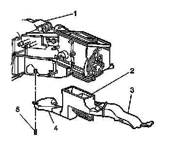

Floor Air Outlet Duct Replacement - Left Side
FLOOR AIR OUTLET DUCT REPLACEMENT - LEFT SIDE
REMOVAL PROCEDURE

1. Remove the push pin (5) from the left floor air outlet duct (4).
2. Remove the left floor duct (1) from the HVAC module (2).
INSTALLATION PROCEDURE
1. Install the left floor air outlet duct (1) to the HVAC module (2).
2. Install the push pin (2) to the left floor air outlet duct.